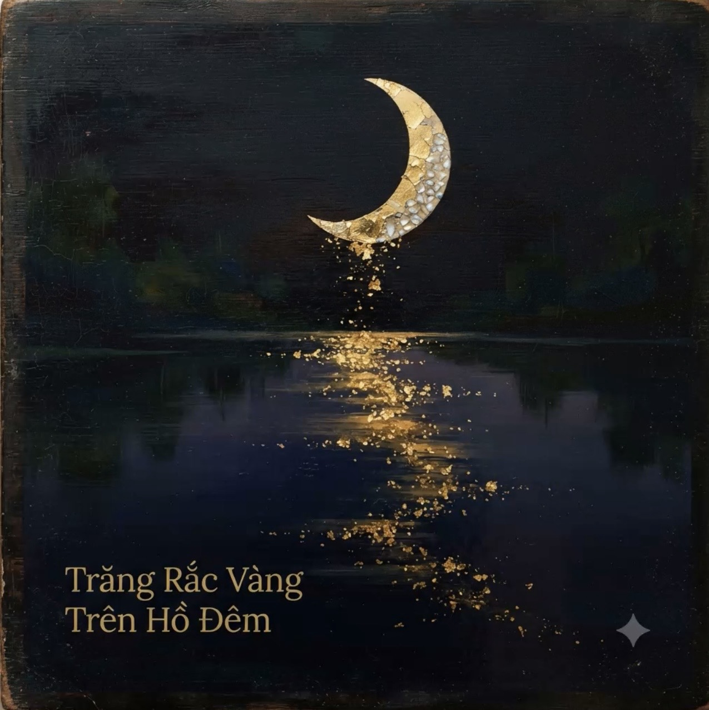

Thi Âm
ĐÊM THU
Nơi thơ tìm thấy tiếng nói của mình

Có thể anh sẽ là khoảng không gian Của bầu trời đêm và gió Có thể tấm lòng anh rộng mở Lặng lẽ hiền như mặt hồ đêm
Có thể em sẽ là ánh trăng Dịu dàng xua đi bóng tối Có thể trăng soi đáy nước Du dương cùng một tâm hồn
Có mối tình không biết tháng năm Không rực rỡ không đơm hoa kết trái Không trần trụi cũng không mộng tưởng Đẹp như trăng rắc vàng lên hồ nước đêm thu